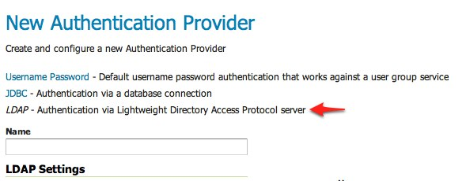

Authentication with LDAP against ActiveDirectory¶
This tutorial explains how to use GeoServer LDAP support to connect to a Windows Domain using ActiveDirectory as an LDAP server. It is recommended that the LDAP authentication section be read before proceeding.
Windows Server and ActiveDirectory¶
Active Directory is just another LDAP server implementation, but has some features that we must know to successfully use it with GeoServer LDAP authentication.
In this tutorial we will assume to have a Windows Server Domain Controller with ActiveDirectory named domain-controller for a domain named ad.local.
If your environment uses different names (and it surely will) use your real names where needed.
We will also assume that:
a group named
GISADMINGROUPexists.a user named
GISADMINexists, has passwordsecret, and belongs to theGISADMINGROUPgroup.a user named
GISUSERexists, has passwordsecret, and does NOT belong to theGISADMINGROUPgroup.
Note
ADMINISTRATOR cannot be generally used as the admin group name with ActiveDirectory, because Administrator is the root user name in Windows environment.
Configure the LDAP authentication provider¶
Start GeoServer and login to the web admin interface as the
adminuser.Click the
Authenticationlink located under theSecuritysection of the navigation sidebar.
Scroll down to the
Authentication Providerspanel and click theAdd newlink.
Click the
LDAPlink.Fill in the fields of the settings form as follows:
Set
Nameto “ad-ldap”Set
Server URLto “ldap://domain-controller/dc=ad,dc=localSet
Filter used to lookup userto(|(userPrincipalName={0})(sAMAccountName={1}))Set
Format used for user login nameto “{0}@ad.local”Check
Use LDAP groups for authorizationCheck
Bind user before searching for groupsSet
Group to use as ADMINto “GISADMINGROUP”Set
Group search baseto “cn=Users”Set
Group search filterto “member={0}”
Test the LDAP connection by entering the username “GISADMIN” and password “secret” in the connection test form located on the right and click the
Test Connectionbutton.
A successful connection should be reported at the top of the page.
Save.
Back on the authentication page scroll down to the
Provider Chainpanel and move thead-ldapprovider fromAvailabletoSelected.
Save.
Test a LDAP login¶
Navigate to the GeoServer home page and log out of the admin account.
Login as the user “GISUSER” with the password “secret”.
Logging in as GISUSER doesn’t yield any administrative functionality because the GISUSER account has not been mapped to the administrator role. In the next section GeoServer will be configured to map groups from the LDAP database to roles.
Now we will login with a user having administrative rights.
Navigate to the GeoServer home page and log out of the account.
Login as the user “GISADMIN” with the password “secret”.
Once logged in full administrative functionality should be available.
Configure the LDAP role service¶
An additional step permits to configure a role service to get GeoServer roles from the LDAP repository and allow access rights to be assigned to those roles.
Click the
Users,Group,Roleslink located under theSecuritysection of the navigation sidebar.Click the
Add new linkunder theRole Servicessection.Click the
LDAPoption under theNew Role Servicesection.Enter
ldapadrsin theNametext field.Enter
ldap://domain-controller/dc=ad,dc=localin theServer URLtext field.Enter
CN=Usersin theGroup search basetext field.Enter
member={1},dc=ad,dc=localin theGroup user membership search filtertext field.Enter
objectClass=groupin theAll groups search filtertext field.Enter
sAMAccountName={0}in theFilter used to lookup usertext field.
Then we need to a choose a user to authenticate on the server (many LDAP server don’t allow anonymous data lookup).
Check the
Authenticate to extract rolescheckbox.Enter
GISADMIN@ad.localin theUsernametext field.Enter
secretin thePasswordtext field.Save.
Click the
ldapadrsrole service item under theRole Servicessection.Select
ROLE_DOMAIN ADMINSfrom theAdministrator rolecombo-box.Select
ROLE_DOMAIN ADMINSfrom theGroup administrator rolecombo-box.Save again.
You should now be able to see and assign the new ActiveDirectory roles wherever an Available Roles list is shown (for example in the Data and Services rules sections.